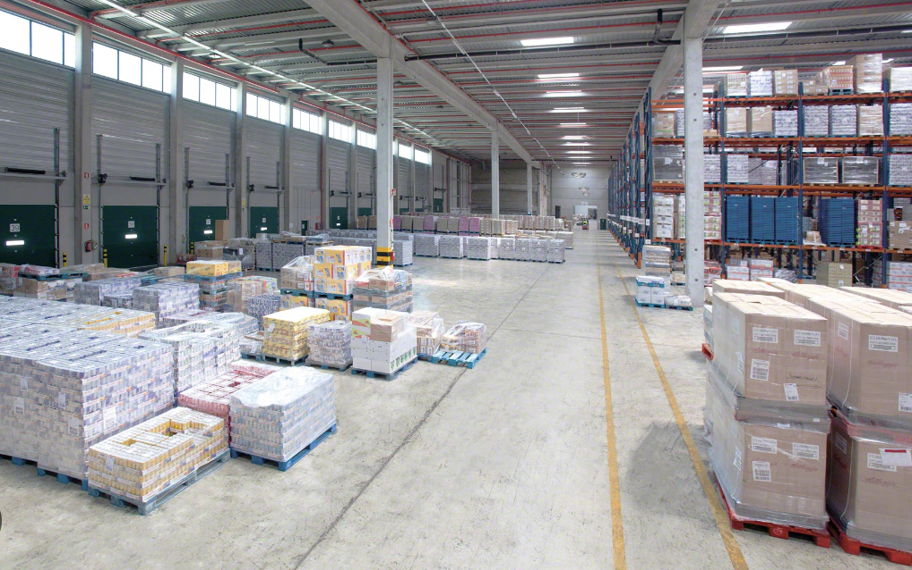

Un almacén de tránsito se utiliza para el almacenamiento temporal de mercancías, sin que se realicen operaciones sobre los productos.
Su función principal es reducir los tiempos de espera en la cadena de suministro, facilitando el flujo continuo de mercancías entre el centro de distribución y el cliente final.
Un almacén de transito cerca de una fábrica. Publicada en
este enlace
Almacén de distribución
Los almacenes de distribución, ubicados estratégicamente cerca del cliente final, aseguran el stock de productos en una región
determinada. Su principal función es reducir los tiempos de entrega y garantizar un suministro constante, evitando interrupciones
y mejorando el servicio al cliente. Entre ellas encontramos tres, las cuales os mostraremos y explicaremos en las siguientes imagenes.
Tipos de almacenes de distribución. En la imagen mas a la izquierda encontraremos el de materias primas, en el de en medio el de componentes
y en el más situado a la derecha tendremos al de productos terminados. Publicada en
este enlace
Almacén de aprovisionamiento o almacén de producción
El almacén de aprovisionamiento almacena materias primas, piezas y componentes necesarios para la fabricación, garantizando
una producción sin interrupciones. Estos almacenes suelen estar ubicados cerca de las fábricas, y en algunos casos, están
conectados directamente para que las mercancías se transporten automáticamente a las líneas de producción.

Un almacén de aprovisionamiento con una producción sin interrupciones. Publicada en
este enlace
Almacén de picking
El almacén de aprovisionamiento almacena materias primas, piezas y componentes necesarios para la fabricación, garantizando
una producción sin interrupciones. Estos almacenes suelen estar ubicados cerca de las fábricas, y en algunos casos, están
conectados directamente para que las mercancías se transporten automáticamente a las líneas de producción.
Video sobre el funcionamiento de un almacén de picking en YouTube.